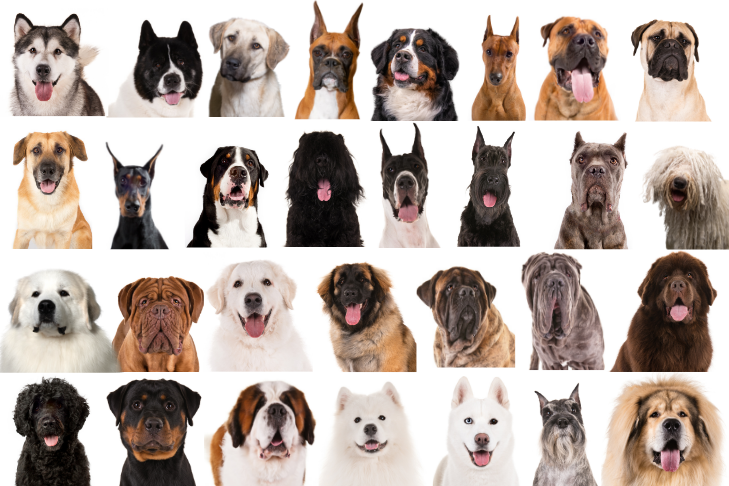
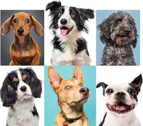

The Domestic Dog
Ranging from tiny Chihuahuas to enormous Great Danes and every breed and magnificent mutt in between, dogs are an incredibly diverse species. Our best friends and furry family members provide us affection and company—but many dogs face neglect, exploitation and cruelty both here and abroad.
Dogs were probably the first tame animals. They have accompanied humans for at least 20,000 years and possibly as many as 40,000. Scientists generally agree that all dogs, domestic and wild, share a common wolf ancestor; at some point grey wolves and dogs went on their separate evolutionary ways.
The dog (Canis familiaris when considered a distinct species or Canis lupus familiaris when considered a subspecies of the wolf) is a member of the genus Canis (canines), which forms part of the wolf-like canids, and is the most widely abundant terrestrial carnivore. The dog and the extant gray wolf are sister taxa as modern wolves are not closely related to the wolves that were first domesticated, which implies that the direct ancestor of the dog is extinct. The dog was the first species to be domesticated, and has been selectively bred over millennia for various behaviors, sensory capabilities, and physical attributes.
Their long association with humans has led dogs to be uniquely attuned to human behavior and they are able to thrive on a starch-rich diet that would be inadequate for other canids. Dogs vary widely in shape, size and colors. They perform many roles for humans, such as hunting, herding, pulling loads, protection, assisting police and military, companionship and, more recently, aiding disabled people and therapeutic roles. This influence on human society has given them the sobriquet of "man's best friend".
The domestic dog is the first species, and the only large carnivore, known to have been domesticated. Especially over the past 200 years, dogs have undergone rapid phenotypic change and were formed into today's modern dog breeds due to artificial selection by humans. These breeds can vary in size and weight from a 0.46 kg (1.0 lb) teacup poodle to a 90 kg (200 lb) giant mastiff. Phenotypic variation can include height measured to the withers ranging from 15.2 centimetres (6.0 in) in the Chihuahua to 76 cm (30 in) in the Irish Wolfhound; color varies from white through grays (usually called "blue") to black, and browns from light (tan) to dark ("red" or "chocolate") in a wide variation of patterns; coats can be short or long, coarse-haired to wool-like, straight, curly, or smooth. The skull, body, and limb proportions vary significantly between breeds, with dogs displaying more phenotypic diversity than can be found within the entire order of carnivores. Some breeds demonstrate outstanding skills in herding, retrieving, scent detection, and guarding, which demonstrates the functional and behavioral diversity of dogs. The first dogs were domesticated from shared ancestors of modern wolves, however the phenotypic changes that coincided with the dog–wolf genetic divergence are not known.